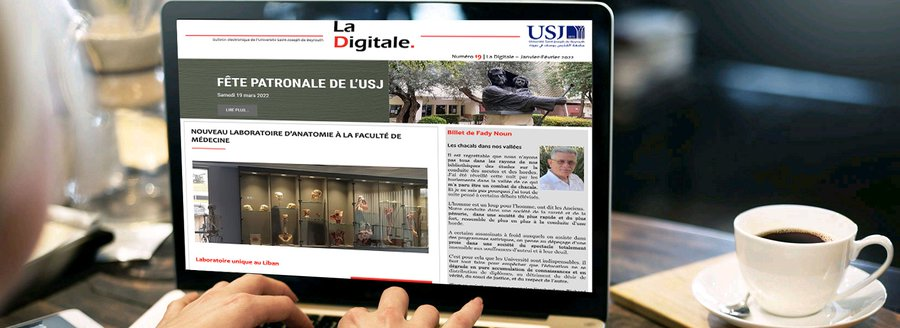
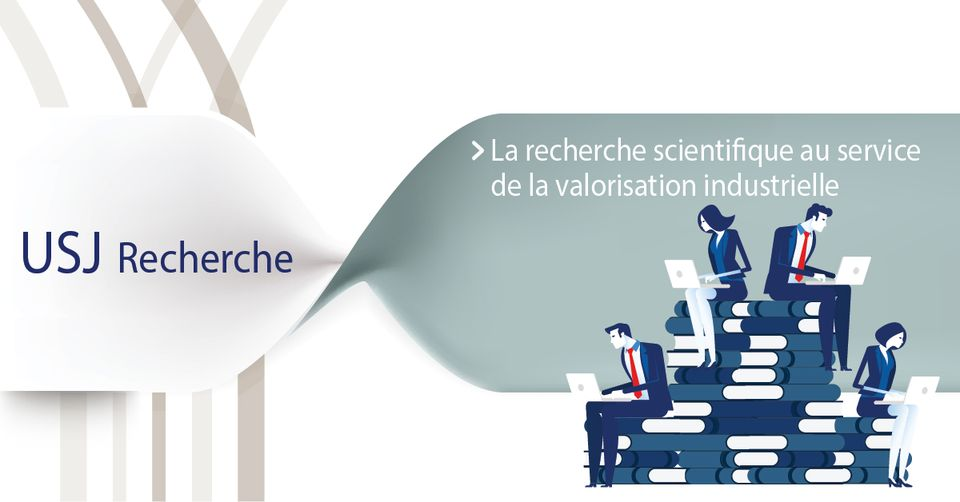
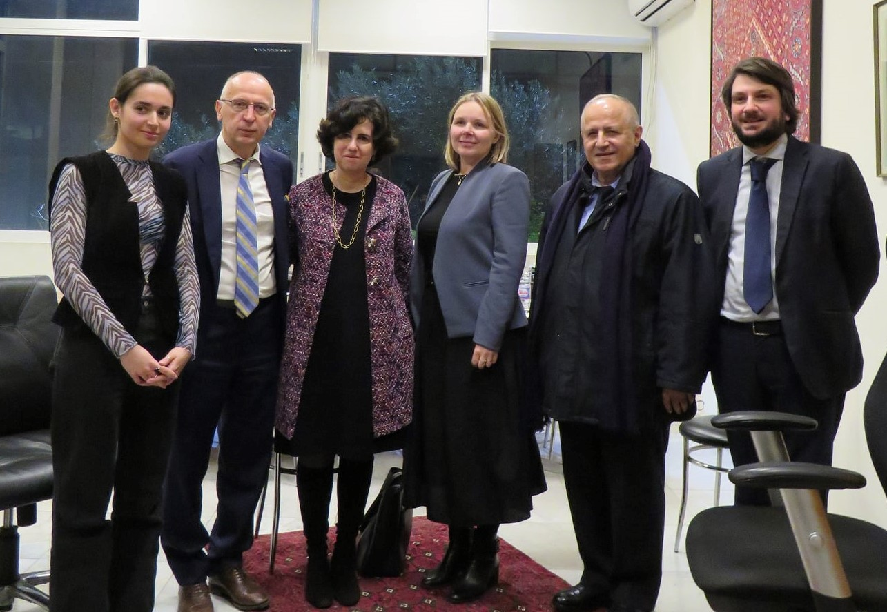
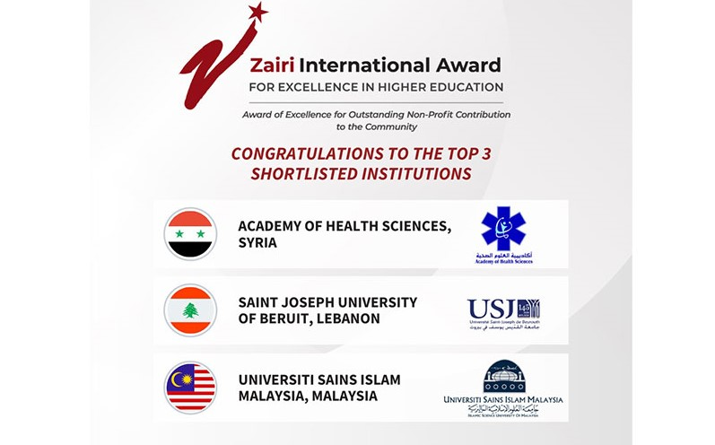

Home
Latest News
About Us
Contact

LaDigitale
Number 19 of #LaDigitale has just been released!
Good reading !
OPEN THE PAGE
Round table “One Sustainable Health”
The Vice-Rectorate for Research of Saint Joseph University in collaboration with the Lebanese National Commission for UNESCO, organized a round table on the theme: "One Sustainable Health » in Lebanon and elsewhere>
READ MORE

USJ Recherche
The innovative trans-Mediterranean project "BESTMEDGRAPE" launched in September 2019 by the European Union in five countries around the Mediterranean is brought to Lebanon by USJ and Berytech.
READ MORE
Meeting with the Minister
Meeting at the USJ with the Minister of Foreign Affairs of the Vatican H.E. Msgr. Paul Gallagher on Tuesday, February 1, 2022
READ MORE
Chinese meeting at the Confucius Institute
On the occasion of its fifteenth anniversary, the Confucius Institute of USJ, organized a meeting under the sign of Chinese culture, in the presence of the Ambassador of the People's Republic of China, Qian Minjian.
READ MORE

Histoire - Relations Internationales USJ
The HRI department at the heart of international news!
Meeting with the Ambassador of Ukraine 🇺🇦 in Lebanon H.E. Ihor Ostash as part of the course "war in the contemporary world"
READ MORE

USJ shortlisted for the Zairi International Awards
Saint Joseph University of Beirut has been shortlisted for the "Award of Excellence for Outstanding Non-Profit Contribution to the Community" category, for Operation 7th day (O7).
READ MORE
1
2